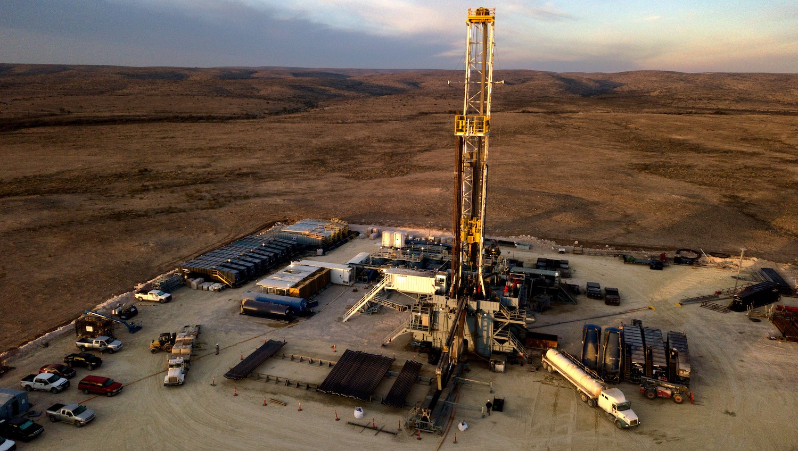

Well Data from FracFocus

Fracing is the injection of a fluid at high pressure into an underground rock formation in order to open fissures and allow trapped gas or crude oil to flow through a pipe to a wellhead at the surface. Employed in combination with improved techniques for drilling horizontally through selected rock layers, fracing has opened up vast natural gas deposits in the United States and elsewhere.
The technology of fracing has been in use since the 1940s, when liquids such as gasoline and crude oil were injected into poorly performing gas and oil wells in the central and southern United States with the aim of increasing their flow rate. Over the following decades, techniques were improved. For instance, treated water became the preferred fracturing medium, and finely graded sand or synthetic materials were adopted as a “proppant” to hold open the fractures.
The amount of fresh water used in fracking a single shale gas well varies greatly, depending on the size of the well and the amount of fracturing that has to be done to release the gas: industry and regulatory sources give figures that range from approximately 7.5 million to 20 million liters (2 million to 5 million gallons). That is roughly equivalent to the water contained in three to eight Olympic-size swimming pools.
- Britannica.com